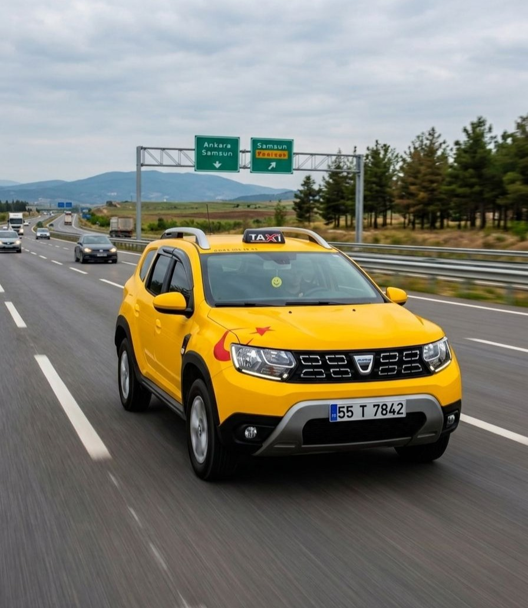
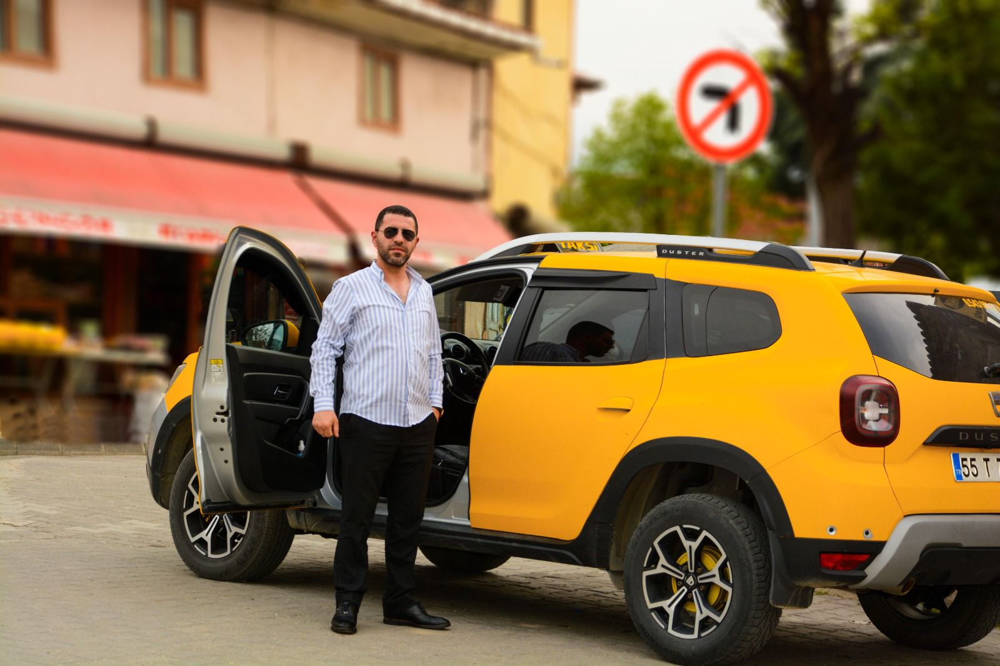

Şehir içi ve şehirler arası seyahatlerinizde güvenle tercih edin.

Vezirköprü Taksi olarak, Samsun Vezirköprü ve çevresinde yılların getirdiği tecrübe, profesyonellik ve müşteri memnuniyeti odaklı hizmet anlayışımızla taşımacılık sektöründe fark yaratıyoruz. Amacımız; yalnızca bir noktadan diğerine gitmenizi sağlamak değil, bu yolculuğu sizin için güvenli, konforlu ve stressiz bir deneyime dönüştürmektir. Bölgenin en çok tercih edilen Vezirköprü taksi durağı olma vizyonuyla, yenilikçi ve çözüm odaklı bir ulaşım ağı sunuyoruz. Gecenin ilerleyen saatlerinde duyduğunuz acil ulaşım ihtiyacından, planlı seyahatlerinize kadar her anınızda Vezirköprü 7/24 taksi hizmetimizle bir telefon kadar yakınınızdayız.
Sizin güvenliğiniz bizim için en öncelikli konudur.
Gecikme olmadan tam saatinde kapınızda.
Sürpriz ek maliyetler veya aşım ücreti yok.
Profesyonel ve şehir rehberliğinde uzman sürücüler.
Tek bir tıkla veya telefonla anında aracınızı çağırın. Vezirköprü'nün neresinde olursanız olun, size en yakın taksi aracımızı hızla yönlendiriyor ve bekleme sürenizi en aza indiriyoruz.
Düzenli bakımları yapılan temiz araçlarımız ve bölge trafiğine hakim, tecrübeli şoförlerimizle yolculuklarınız her zaman güvence altında. Gözünüz arkada kalmadan seyahat edin.
Güler yüzlü hizmet, 7/24 ulaşılabilirlik ve cep yakmayan uygun taksi fiyat politikamızla yolcularımızın memnuniyeti her zaman ilk önceliğimizdir. Bizimle yolculuk bir ayrıcalıktır.
Otobüs seferleriniz için Vezirköprü Otogarı'na, uçuşlarınız için ise Samsun veya Merzifon havalimanlarına tam vaktinde, bagaj derdi olmadan konforlu transfer sağlıyoruz.
Vezirköprü Devlet Hastanesi randevularınızda veya acil sağlık ihtiyaçlarınızda, zaman kaybetmeden en hızlı ve güvenli şekilde ulaşımınızı gerçekleştiriyoruz.
Vezirköprü merkezinde günün her saati kesintisiz hizmet! Bulunduğunuz yere en yakın nöbetçi taksi aracımızı anında yönlendiriyor, bekletmiyoruz.
Vezirköprü'nün turizm incisi Şahinkaya Kanyonu'na yapacağınız gezi ve turlarda konforlu, güvenli ve size özel taksi ulaşımı sağlıyoruz.

Kesinlikle. Otobüs sefer saatlerinize tam uyum sağlayarak Vezirköprü otogar taksi hizmetimizle eşyalarınızla birlikte sizi terminale / evinize sorunsuz ulaştırıyoruz. Aynı şekilde sağlık ihtiyaçlarınız için Vezirköprü devlet hastanesi taksi taleplerinizde poliklinik veya acil servis girişinde dakikalar içinde yanınızda oluyoruz.
Çanaklı mahallesi 1612.sokak No:0 Vezirköprü/Samsun